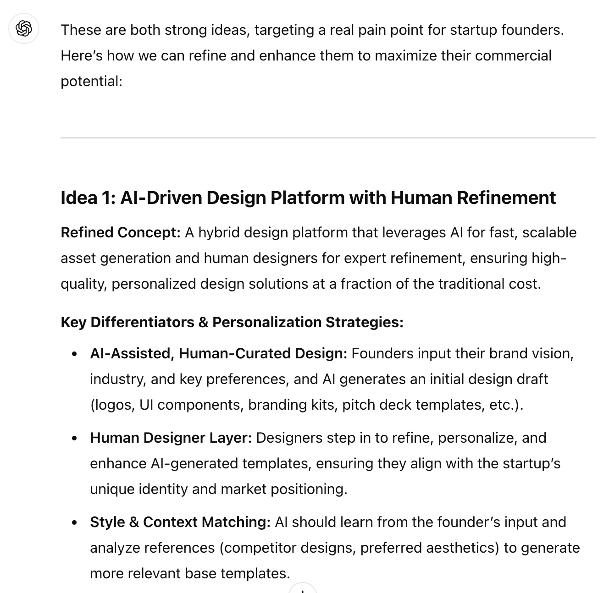

AI + Human generates strong synergy
In my third attempt, I focused on using LLMs as an idea refiner. Initially, I was disappointed by the lack of variation in GPT’s output. However, as the conversation progressed, I was once again impressed by its ability to address my concerns and support its viewpoints with relevant market insights drawn from its data.
Beyond generating a promising commercial idea, we collaborated to craft a compelling pitch statement—one that could be used for marketing and presenting to early investors.
LLMs as idea refiners
To let LLM plays the refiner role, I reworked my prompt (the base prompt remains the same):
I want to come up with a profitable product idea and want you to be my helper for this brainstorming session. I’m the one who will be providing the ideas, but you are responsible for improving how ideas are expressed, in order to maximize our product attraction to potential customers. You are also responsible for filling in the details, such as features or unique selling points, if needed. Your goal is to effectively communicate the idea and persuade the potential customers and investors to buy the product or make the investment.
This time, the dynamic shifted—the responsibility of generating ideas fell on me. Unlike before, the idea pool remained within the two concepts I provided. Instead of prioritizing breadth, we focused on depth, thoroughly examining and defending every possible argument that users or investors might raise.

I wasn’t very satisfied at first, as the output didn’t differ much from what I had received in my initial attempt. Even after refinement, the ideas remained generic and unconvincing. Based on my previous interactions with LLMs, I decided not to ask for further elaboration or expansion. Instead, I structured my prompt to focus on the skepticism raised by the “imaginary” investors, and asked for its feedback:
I presented these ideas to early investors, but they expressed skepticism about several aspects: the high level of market competition, my ability to sustain a large network of designers who are consistently available to take orders, and AI’s effectiveness in generating branding assets and UI in a truly valuable way. Please help me craft responses to address these concerns, using data and reasoning to demonstrate the potential of both ideas.
This time, it worked much better as we shifted from a broad landscape to a few highly specific concerns—an area where GPT seems to excel. By addressing each concern directly, GPT provided insightful feedback with clear reasoning, market validation, and key points to help persuade investors. For example, when countering concerns about sustaining a large network of designers, it argued that “we don’t need a huge designer pool to succeed–we just need smart workflow management to match demand and supply efficiently.”
Then I asked a couple follow-up questions, pushing back once again by stating some potential skepticisms from investors.
GPT maintained a structured and clear approach in its responses. As I reviewed them, I found most to be compelling and well-reasoned—strong enough to be included in a pitch deck with some refinements. In the end, GPT delivered a closing statement that effectively addressed the three key concerns I had raised.
Summary: how should we use LLMs in ideation?
Based on my three rounds of experiments, I summarized several key takeaways when using LLMs as ideating partner:
- LLMs can be valuable ideation partners, especially when acting as prompters and refiners. By leveraging both roles at different stages—initial brainstorming and refinement—humans can generate more compelling and feasible ideas.
- The base prompt has to be concrete and specific, providing the LLMs with sufficient context about target market and problem space.
- Humans should remain the driving force in ideation. The experiments have shown that AI tends to produce safe, average choices, while the ability to generate truly innovative, breakthrough ideas remains unique to human creativity due to our free-flowing thinking patterns.
- During the ideating process, think actively with LLM and ask specific, rather than open-ended, questions. The more information and personal insights you feed LLMs, the more ideal your output might be.
- When prompting LLMs, focus on concrete elements such as features, challenges, and actionable suggestions to get the most useful insights.
- Leverage LLMs to identify blind spots by constantly challenging their responses and prompting them with counterarguments and imaginary refutations.